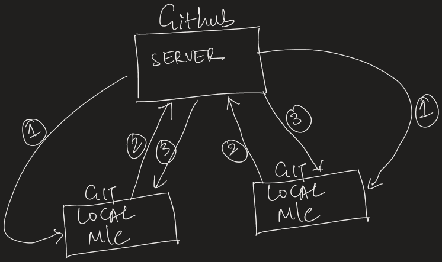

Git Notes
Summary
- Basics of Git and Github
- Basic commands to clone a repo, work on repo
- Basic commands for branching
- Todo
- Todo
Git Introduction
Git is a version control system (VCS).
So what is version control software?
In software development we work on files and constantly update files like add / remove / modify. Often times we realise we have made some changes and it is now very late to recover the data as we might have overridden or deleted the file. And this issue exacerbates to multi folds if there are more than one person working on files in a project. To address the issues version control software is developed.
VSC keeps a close eye on specific folder structure once instructed. Any files which are added, modified, deleted are all recorded. At any point we can go back in time to see what the status of the entire file structure so that if required we can go back and undo the changes made.
There are many vendors providing types of version control software. Git is one among them. It uses distributed architecture instead of centralised version control system. (to avoid single point of failure)
All it requires is installing Git software in our local device. We need learn some commands to interact with the Git VC. Here we need to see one important point. Git protects us from data loss from any inadvertent actions. But what happens to our data if device itself fails? To address this issue Git provides feature called GitHub.
So what is GitHub? GitHub is a website interface for Git software installed in the cloud. This portal enables users to manage the data stored in the cloud.
Git - Distributed architecture
As shown in the below figure, first a repo (folder) is created in the GitHub (cloud) and all the neccesary files are added to the remote repo and all files are committed which are now ready for the users to clone it in their local machine. Now user can create local repo and clone the entire remote repo into local repo. The cloning step downloads entire data essentially mirroring the remote repo including the complete version history and not just snapshots and thus provides completely localised operations which enables fast access to all files (as everything is local).
Key concepts
- Repository
- A Git repository or repo in short is a folder that contains all the files adn history of a proejct. As shown in the below figure, local repo are created in project user's machine and remote repo is created in GitHub
- In git, there are three main areas : working folder, staging area and git folder (repo)
- A file in the Git VCS undergoes following status
- Untracked - Files which are newly added to the working folder and Git has no info about it or is not started to track.
- Modified - Files which are already being tracked and are yet to committed to database as final change.
- Unmodified - informing that no changes are made to the file.
- Staged - Files which are pushed to staging area (it is just an index file recording all info required for commit) and awaiting for final commit i.e. recorded in snapshot.
- Commit
- A commit is a snapshot of your code at a specific point in time. Git takes snapshot of entire folder system which reflect the new changes along with only references to the files which are not changed. Almost all operations of Git is local hence the speed! It only refers the local data to display entire history without contacting any other system.
- branching
- Git allows you to create branches to work on features, bug fixes, or experiments independently. The main branch, often called "master" or "main," is the default branch where the stable code resides
- Merge
- Merging is the process of combining changes from one branch into another. It's a way to integrate new features or bug fixes into the main branch.
- Push and pull
- Pulling is the act of getting changes from a remote repository to your local repository, while pushing is sending your local changes to the remote repository. This ensures collaboration and synchronization among team members.
- In local repo, any files added, modified needs to be first pushed into staging area before committing as final change
Important Git Commands
- git config --global user.name "" and git config --global
user.email ""
- This is the part of the configuration (one time activity), setting username and email to reflect in all commits in both local and remote repos.
- git init
- Initializes an existing folder as a Git repo.
- git clone url
- Retrieve remote rep via url. i.e to clone the remote repo into local. For first time, we need to authorise the permission to clone/push/pull into GitHub
- git status
- shows files with status like modified in working folder and also any files in staging area
- git add filename
- add the file (either new / modified) into staging area
- git reset filename
- unstaging a file back to working folder
- git commit -m message
- committing the file from staged area to commit db. i.e. as a new commit snapshot
- git dddd
- Expnation
- git dddd
- Expnation
Todo: Typical user journey
- User clones the remote repo
- Post making changes, they push the changes to remote repo bringing it to upto date
- If there are any new changes made by other users, we can pull these changes and get latest codebase
Todo: Steps in detail
Initialization:
Staging:
Committing: .
Branching: .
Merging:
Remote Collaboration:
Note: A one time activity of installing Git VCS in local machine is required before user can clone a remote repo. This gives all the tools required to manage files locally.